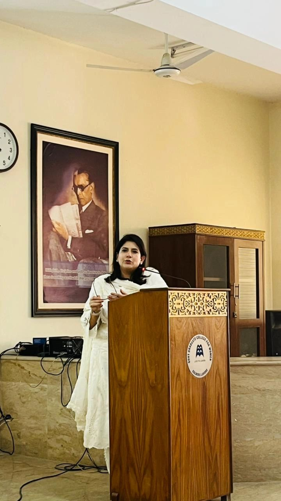
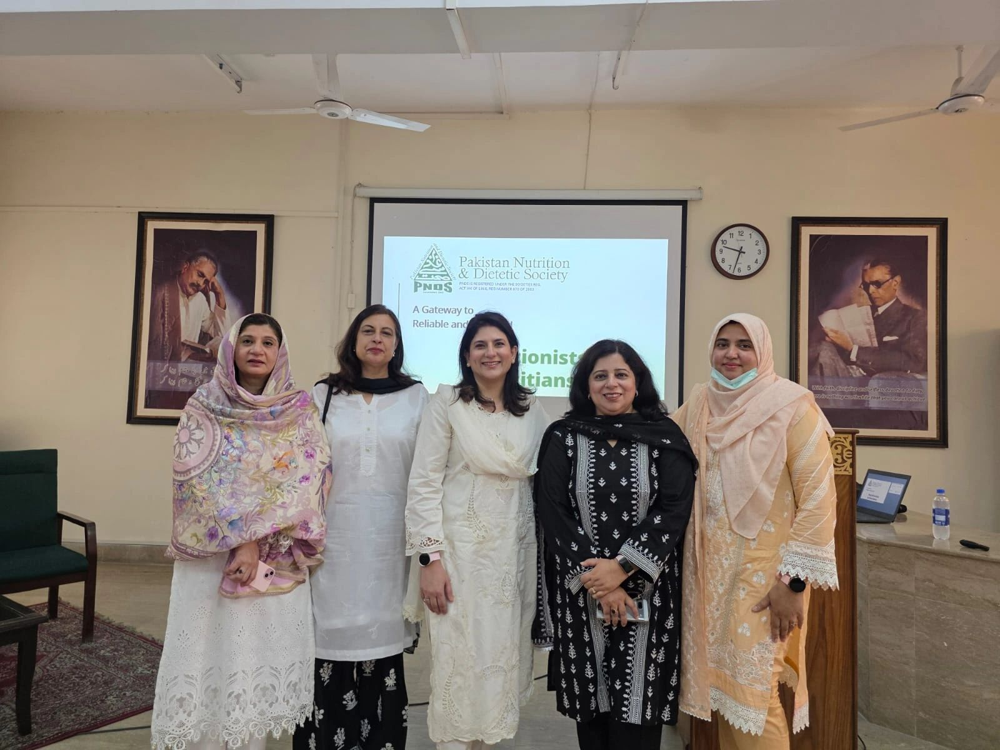
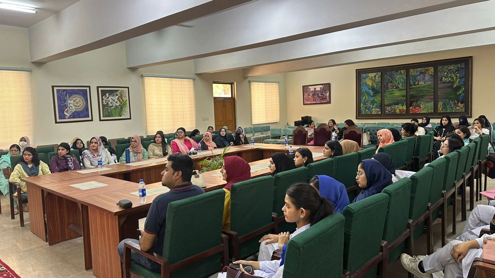

Date: May 2026
Location: Government Graduate College for Women, Gulberg, Lahore
Organization: Pakistan Nutrition & Dietetic Society (PNDS), Lahore Chapter
Presenter: Ms. Shifa Amna Ali, with Amber Mustafa, RD as CNE Chair and session organiser
As CNE Chair for the PNDS Lahore Chapter, I organised this session at the Government Graduate College for Women, Gulberg, Lahore, built around one of the most important nutrition documents to come out in recent years: the American Heart Association's 2026 scientific statement on dietary guidance for cardiovascular health.
What the AHA's 2026 statement covers
The session walked attendees through the AHA's updated dietary recommendations for preventing and managing cardiovascular disease — the world's leading cause of death, and a growing concern in Pakistan given rising rates of hypertension, diabetes, and obesity. Key themes included:
- Dietary patterns over single nutrients — DASH and Mediterranean-style eating patterns remain the strongest evidence-based approaches for heart health, rather than focusing on any one "good" or "bad" food.
- Sodium reduction — practical strategies for cutting back on salt without losing flavour, particularly relevant for a cuisine that relies heavily on namak, achaar, and processed snacks.
- Healthy fats — shifting the balance toward unsaturated fats (nuts, seeds, fish, plant oils) and away from excess saturated and trans fats common in fried and bakery foods.
- Fibre and plant foods — building meals around vegetables, legumes, and whole grains, which support both cholesterol and blood pressure management.

Translating guidance into Pakistani kitchens
The most useful part of any session like this is the translation step — taking international guidelines and showing how they map onto daal, sabzi, roti, and the rest of a typical Pakistani plate. None of the AHA's recommendations require giving up desi food; they're about adjusting how it's cooked and what accompanies it, so that an entire household can eat from the same pot while managing — or preventing — cardiovascular risk.
Sessions like this one are a core part of why I take on the CNE Chair role for PNDS Lahore Chapter: keeping local dietitians and allied health professionals up to date on the latest evidence, and grounding it in food that's actually on our tables.


Want a heart-healthy nutrition plan built around the food your family already cooks? Book a consultation.